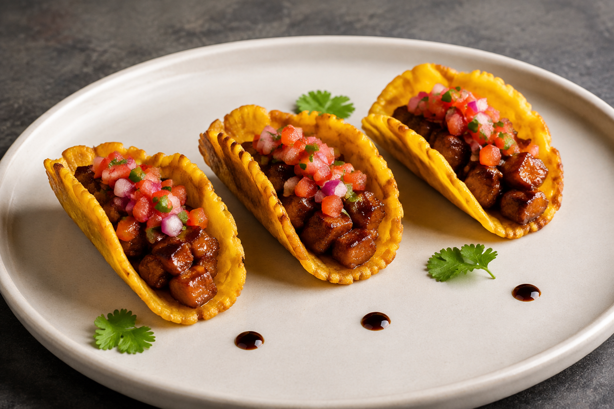
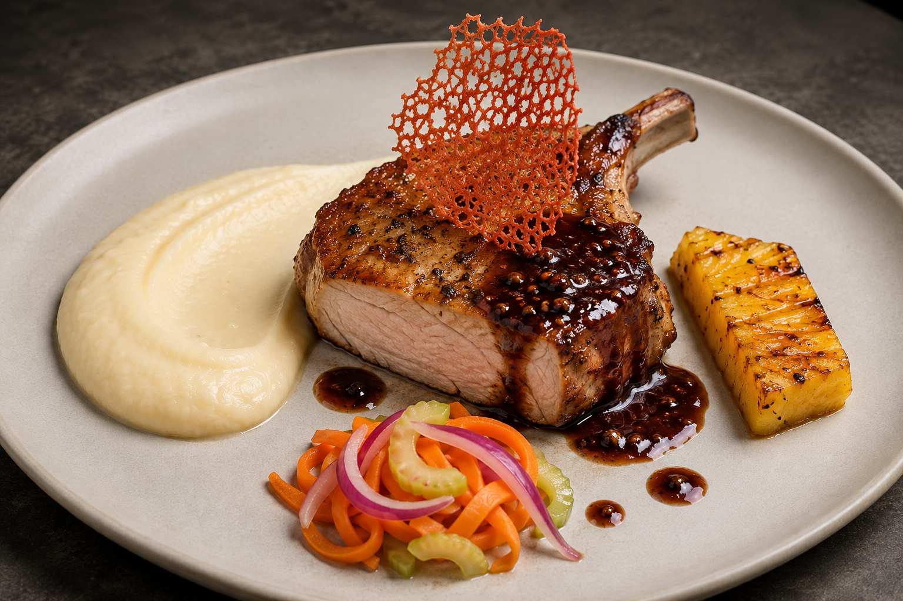
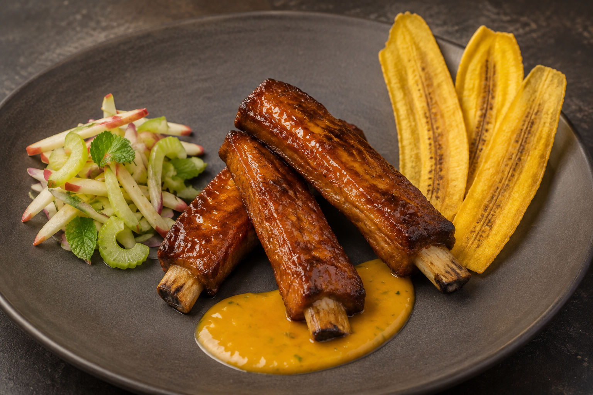

Tres servicios, una sola ruta crítica
Las costillas entran primero. La entrada se monta al minuto 48; las dos carnes principales se terminan al final para conservar jugosidad y crocancia.
MINUTO 483 tacos listos
MINUTO 72Chuleta emplatada
MINUTO 80Costillas emplatadas
Progreso general0 de 32 tareas · 0%
Etapa actual: 1. Arranque crítico
Minuto 0: todos trabajanMientras Santiago organiza las tres carnes, Ángela, Julián y Sofía completan simultáneamente el mise en place de sus estaciones.
Límite de SantiagoEntrega las costillas crudas organizadas antes del minuto 5. Después no interviene en su cocción, glaseado ni emplatado.
Responsables principalesÁngela lidera el plato 1. Sofía lidera las costillas y el glaseado; Julián se encarga de los vegetales y la apoya.
Una sola fritura organizadaPrimera fritura del patacón, luego chips y finalmente segunda fritura del patacón. Filtrar residuos entre tandas.
Orden de montaje
ENTRADA · 00:45–00:48
- Patacón en U.
- Cerdo glaseado.
- Pico de gallo escurrido.
PLATO 1 · 01:08–01:12
- Puré y chuleta.
- Salsa y piña.
- Encurtidos y coral.
PLATO 2 · 01:14–01:20
- Salsa en base.
- Tres costillas.
- Ensalada y chips.
Santiago
Ángela
Julián
Sofía
Cantidades y puntos críticosLas fichas están reducidas a lo necesario para el servicio acordado y organizadas según el tiempo disponible.
Referencias visualesUsarlas como orientación de volumen, separación y altura. Limpiar siempre el borde del plato antes de entregar.



Este HTML y las tres imágenes deben permanecer juntos dentro de la carpeta plan_cerdo_clase.